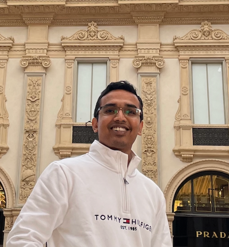
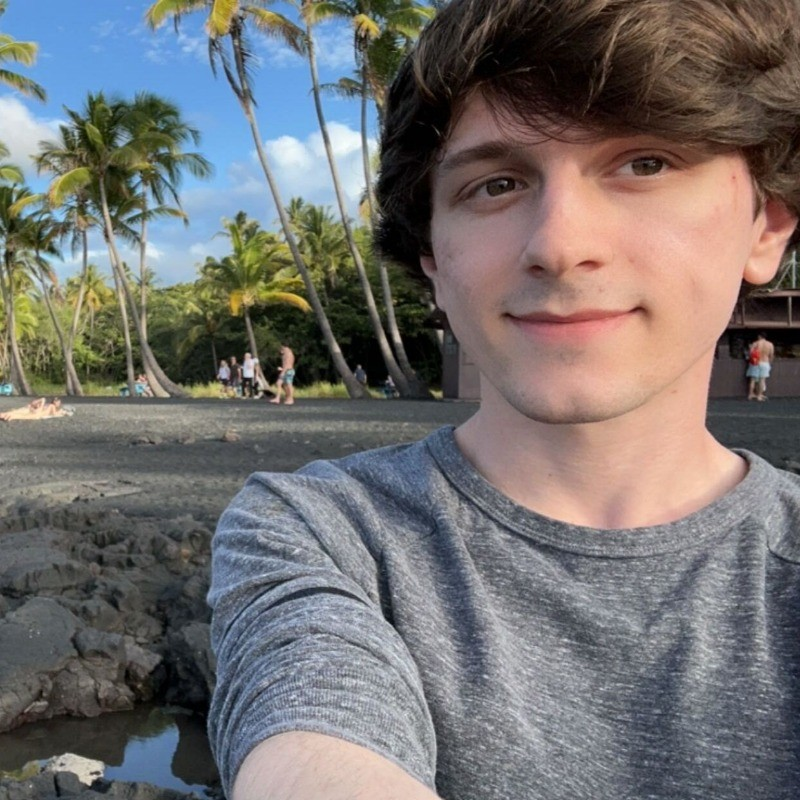
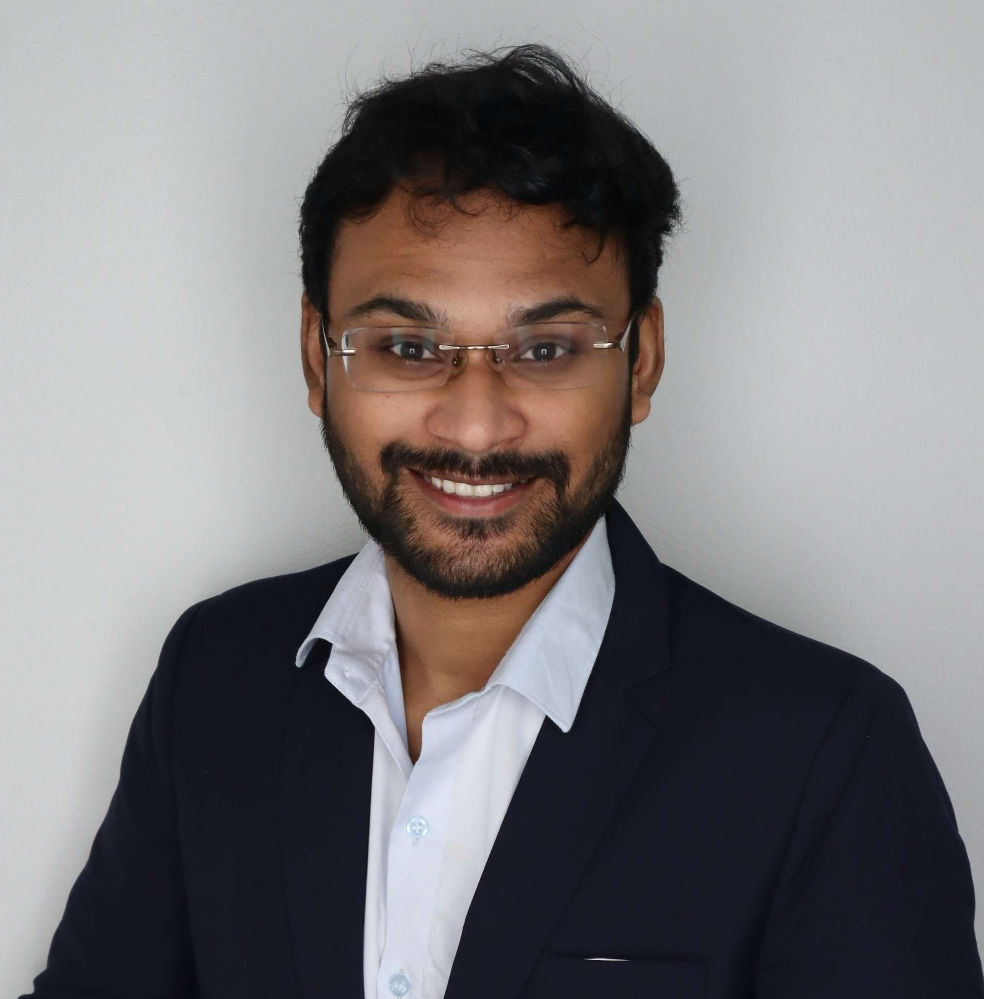
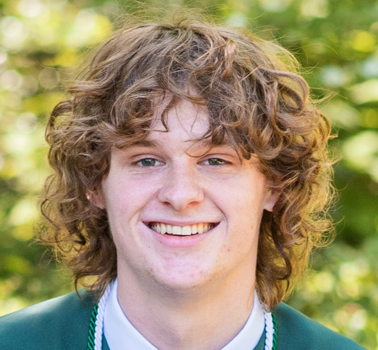

CVPR 2025
LLAVIDAL
A multimodal large language vision model for daily activities of living.
View paperComputer Vision at UNC Charlotte
Charlotte Vision Lab is a research-driven hub at UNC Charlotte advancing the frontiers of visual intelligence. Our work spans video understanding, multimodal learning, robotic perception, generative modeling, and trustworthy machine vision—unified by a mission to build systems that see, reason, and act in complex real-world environments.
Highlights
CVPR 2025
A multimodal large language vision model for daily activities of living.
View paperCVPR 2026
Temporal Modeling for Long Untrimmed Video Understanding.
View project sourceCVPR 2026
Write a description of a photo in the style of a subject.
View paperPreprint
A depth-aware latent action framework for vision-language-action models in robot learning.
View paperFaculty
Assistant Professor
Hieu Le’s public homepage describes a research program focused on controllable and reliable machine vision systems. His work spans explainable and uncertainty-aware modeling, generative vision, 3D shape reconstruction, segmentation, and scene understanding. UNC Charlotte’s CCI faculty announcement lists his interests as computer vision, machine learning, uncertainty estimation, and generative modeling.

Assistant Professor
Srijan Das’s public site centers on video representation learning, vision-language models, multimodal inputs, egocentric and exocentric viewpoints, robotic vision, and action understanding. His homepage also lists current lab members and a publication trail that connects the lab’s work in daily living activities, robotics, and video reasoning.
Students

Ph.D. Student
Dominick’s homepage and UNC Charlotte profile describe work on multimodal learning in vision-language models for video understanding and robotic control, with emphasis on activities of daily living and cross-view learning.

Ph.D. Student
Arkaprava’s personal site describes a Ph.D. agenda at the intersection of vision-language models, video understanding, temporal modeling, and multimodal learning, with a focus on scalable algorithms for long-video understanding.

Ph.D. Student
Manish is a Ph.D student in Computer Science at UNC Charlotte, working on robot learning and multimodal AI. His research explores vision-language-action models for perception, manipulation, and navigation in embodied systems.

Ph.D. Student
Srijan Das’s public CV lists Weston as a current Ph.D. student with a thesis direction in 3D vision induced video generation. A recent preprint, DiffSwap++, also places Weston in cross-lab work connecting 3D-aware generation, identity preservation, and computer vision.
Ph.D. Student
Public material tied to Srijan Das’s CV lists Wenhao as a current Ph.D. student at UNC Charlotte. The publicly stated thesis direction is egocentric vision.
Student
Included in the current team roster for this site. A public research homepage or university profile was not confidently identified during sourcing, so this card is intentionally kept minimal until you want to add verified biography details.
Research
Public pages from Srijan Das, Dominick Reilly, and Arkaprava Sinha show a strong through-line in long-video understanding, action recognition, and multimodal reasoning for activities of daily living.
The student and faculty publication trail highlights VLMs and VLA models that combine RGB video, skeletons, depth, and text for transfer, instruction tuning, and robot policy learning.
Hieu Le’s homepage and recent cross-group papers point to a second major pillar: explainable generative modeling, 3D shape reasoning, uncertainty estimation, and controllable vision systems.